The elements carbon, hydrogen, nitrogen, oxygen, sulfur, and phosphorus are the key building blocks of the chemicals found in living things. They form the carbohydrates, nucleic acids, proteins, and lipids (all of which will be defined later in this chapter) that are the fundamental molecular components of all organisms. In this chapter, we will discuss these important building blocks and learn how the unique properties of the atoms of different elements affect their interactions with other atoms to form the molecules of life.
Food provides an organism with nutrients — the matter it needs to survive. Many of these critical nutrients come in the form of biological macromolecules, or large molecules necessary for life. These macromolecules are built from different combinations of smaller organic molecules. What specific types of biological macromolecules do living things require? How are these molecules formed? What functions do they serve? In this chapter, we will explore these questions.
- Describe matter and elements
- Describe the interrelationship between protons, neutrons, and electrons, and the ways in which electrons can be donated or shared between atoms
- Describe the properties of water that are critical to maintaining life
- Describe the ways in which carbon is critical to life
- Explain the impact of slight changes in amino acids on organisms
- Describe the four major types of biological molecules
- Understand the functions of the four major types of molecules
| # | Lesson | Key Concepts | Source |
|---|---|---|---|
| 1 | Atoms & Elements | Matter, elements, atoms, protons/neutrons/electrons, atomic number, mass number, isotopes, carbon dating | CB 2.1 |
| 2 | Chemical Bonds | Electron shells, octet rule, ions, ionic bonds, covalent bonds, polar/nonpolar, hydrogen bonds, van der Waals | CB 2.1 |
| 3 | Water & Its Properties | Polarity, cohesion, adhesion, surface tension, heat capacity, solvent, ice density, pH, acids, bases, buffers | CB 2.2 |
| 4 | Carbon & Macromolecules | Carbon chemistry, functional groups, dehydration synthesis, hydrolysis, monomers and polymers | CB 2.3 |
| 5 | Carbohydrates & Lipids | Mono/di/polysaccharides, cellulose, starch, glycogen, triglycerides, phospholipids, steroids, trans fats | CB 2.3 |
| 6 | Proteins & Nucleic Acids | Amino acids, peptide bonds, 4 levels of protein structure, enzymes, denaturation, nucleotides, DNA, RNA | CB 2.3 |
| 7 | Unit Review & Practice Test | All topics — 20-question comprehensive assessment | All |
| Standard | Description | Lessons |
|---|---|---|
| BIO.2a | The chemical and biochemical principles vital to life, including water chemistry and pH | 1, 2, 3 |
| BIO.2b | The structure and function of macromolecules (carbohydrates, lipids, proteins, nucleic acids) | 4, 5, 6 |
| BIO.2c | The role of enzymes as biological catalysts | 6 |
- Describe matter and elements
- Describe the interrelationship between protons, neutrons, and electrons
- Define atomic number and mass number
- Explain what isotopes are and how carbon dating works
At its most fundamental level, life is made up of matter. Matter occupies space and has mass. All matter is composed of elements, substances that cannot be broken down or transformed chemically into other substances. Each element is made of atoms, each with a constant number of protons and unique properties. A total of 118 elements have been defined; however, only 92 occur naturally, and fewer than 30 are found in living cells. The remaining 26 elements are unstable and, therefore, do not exist for very long or are theoretical and have yet to be detected.
Each element is designated by its chemical symbol (such as H, N, O, C, and Na), and possesses unique properties. These unique properties allow elements to combine and to bond with each other in specific ways.
An atom is the smallest component of an element that retains all of the chemical properties of that element. For example, one hydrogen atom has all of the properties of the element hydrogen, such as it exists as a gas at room temperature, and it bonds with oxygen to create a water molecule. Hydrogen atoms cannot be broken down into anything smaller while still retaining the properties of hydrogen. If a hydrogen atom were broken down into subatomic particles, it would no longer have the properties of hydrogen.
At the most basic level, all organisms are made of a combination of elements. They contain atoms that combine together to form molecules. In multicellular organisms, such as animals, molecules can interact to form cells that combine to form tissues, which make up organs. These combinations continue until entire multicellular organisms are formed.
All atoms contain protons, electrons, and neutrons (Figure 2.2). The most common isotope of hydrogen (H) is the only exception and is made of one proton and one electron with no neutrons. A proton is a positively charged particle that resides in the nucleus (the core of the atom) of an atom and has a mass of 1 and a charge of +1. An electron is a negatively charged particle that travels in the space around the nucleus. In other words, it resides outside of the nucleus. It has a negligible mass and has a charge of –1.
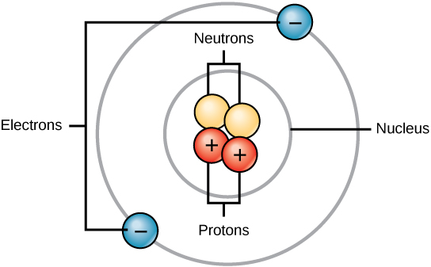
Neutrons, like protons, reside in the nucleus of an atom. They have a mass of 1 and no charge. The positive (protons) and negative (electrons) charges balance each other in a neutral atom, which has a net zero charge.
Because protons and neutrons each have a mass of 1, the mass of an atom is equal to the number of protons and neutrons of that atom. The number of electrons does not factor into the overall mass, because their mass is so small.
As stated earlier, each element has its own unique properties. Each contains a different number of protons and neutrons, giving it its own atomic number and mass number. The atomic number of an element is equal to the number of protons that element contains. The mass number, or atomic mass, is the number of protons plus the number of neutrons of that element. Therefore, it is possible to determine the number of neutrons by subtracting the atomic number from the mass number.
These numbers provide information about the elements and how they will react when combined. Different elements have different melting and boiling points, and are in different states (liquid, solid, or gas) at room temperature. They also combine in different ways. Some form specific types of bonds, whereas others do not. How they combine is based on the number of electrons present. Because of these characteristics, the elements are arranged into the periodic table of elements, a chart of the elements that includes the atomic number and relative atomic mass of each element. The periodic table also provides key information about the properties of elements (Figure 2.3) — often indicated by color-coding. The arrangement of the table also shows how the electrons in each element are organized and provides important details about how atoms will react with each other to form molecules.
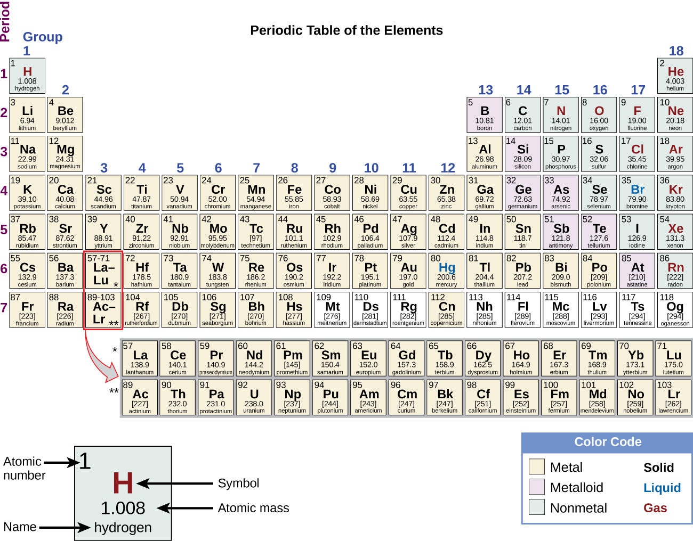
Isotopes are different forms of the same element that have the same number of protons, but a different number of neutrons. Some elements, such as carbon, potassium, and uranium, have naturally occurring isotopes. Carbon-12, the most common isotope of carbon, contains six protons and six neutrons. Therefore, it has a mass number of 12 (six protons and six neutrons) and an atomic number of 6 (which makes it carbon). Carbon-14 contains six protons and eight neutrons. Therefore, it has a mass number of 14 (six protons and eight neutrons) and an atomic number of 6, meaning it is still the element carbon. These two alternate forms of carbon are isotopes. Some isotopes are unstable and will lose protons, other subatomic particles, or energy to form more stable elements. These are called radioactive isotopes or radioisotopes.
After approximately 5,730 years, only one-half of the starting concentration of ¹⁴C will have been converted to ¹⁴N. The time it takes for half of the original concentration of an isotope to decay to its more stable form is called its half-life. Because the half-life of ¹⁴C is long, it is used to age formerly living objects, such as fossils. Using the ratio of the ¹⁴C concentration found in an object to the amount of ¹⁴C detected in the atmosphere, the amount of the isotope that has not yet decayed can be determined. Based on this amount, the age of the fossil can be calculated to about 50,000 years (Figure 2.4). Isotopes with longer half-lives, such as potassium-40, are used to calculate the ages of older fossils. Through the use of carbon dating, scientists can reconstruct the ecology and biogeography of organisms living within the past 50,000 years.
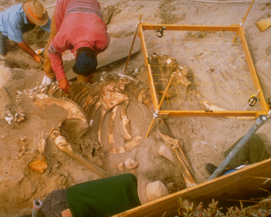

Complete the written checkpoint above to unlock the quiz.
- Describe the ways in which electrons can be donated or shared between atoms
- Explain electron shells and the octet rule
- Distinguish between ions, cations, and anions
- Compare and contrast ionic, covalent, hydrogen, and van der Waals bonds
- Distinguish polar covalent bonds from nonpolar covalent bonds
How elements interact with one another depends on how their electrons are arranged and how many openings for electrons exist at the outermost region where electrons are present in an atom. Electrons exist at energy levels that form shells around the nucleus. The closest shell can hold up to two electrons. The closest shell to the nucleus is always filled first, before any other shell can be filled. Hydrogen has one electron; therefore, it has only one spot occupied within the lowest shell. Helium has two electrons; therefore, it can completely fill the lowest shell with its two electrons. If you look at the periodic table, you will see that hydrogen and helium are the only two elements in the first row. This is because they only have electrons in their first shell. Hydrogen and helium are the only two elements that have the lowest shell and no other shells.
The second and third energy levels can hold up to eight electrons. The eight electrons are arranged in four pairs and one position in each pair is filled with an electron before any pairs are completed.
Looking at the periodic table again (Figure 2.3), you will notice that there are seven rows. These rows correspond to the number of shells that the elements within that row have. The elements within a particular row have increasing numbers of electrons as the columns proceed from left to right. Although each element has the same number of shells, not all of the shells are completely filled with electrons. If you look at the second row of the periodic table, you will find lithium (Li), beryllium (Be), boron (B), carbon (C), nitrogen (N), oxygen (O), fluorine (F), and neon (Ne). These all have electrons that occupy only the first and second shells. Lithium has only one electron in its outermost shell, beryllium has two electrons, boron has three, and so on, until the entire shell is filled with eight electrons, as is the case with neon.
Not all elements have enough electrons to fill their outermost shells, but an atom is at its most stable when all of the electron positions in the outermost shell are filled. Because of these vacancies in the outermost shells, we see the formation of chemical bonds, or interactions between two or more of the same or different elements that result in the formation of molecules. To achieve greater stability, atoms will tend to completely fill their outer shells and will bond with other elements to accomplish this goal by sharing electrons, accepting electrons from another atom, or donating electrons to another atom. Because the outermost shells of the elements with low atomic numbers (up to calcium, with atomic number 20) can hold eight electrons, this is referred to as the octet rule. An element can donate, accept, or share electrons with other elements to fill its outer shell and satisfy the octet rule.
When an atom does not contain equal numbers of protons and electrons, it is called an ion. Because the number of electrons does not equal the number of protons, each ion has a net charge. Positive ions are formed by losing electrons and are called cations. Negative ions are formed by gaining electrons and are called anions.
For example, sodium only has one electron in its outermost shell. It takes less energy for sodium to donate that one electron than it does to accept seven more electrons to fill the outer shell. If sodium loses an electron, it now has 11 protons and only 10 electrons, leaving it with an overall charge of +1. It is now called a sodium ion.
The chlorine atom has seven electrons in its outer shell. Again, it is more energy-efficient for chlorine to gain one electron than to lose seven. Therefore, it tends to gain an electron to create an ion with 17 protons and 18 electrons, giving it a net negative (–1) charge. It is now called a chloride ion. This movement of electrons from one element to another is referred to as electron transfer. As Figure 2.5 illustrates, a sodium atom (Na) only has one electron in its outermost shell, whereas a chlorine atom (Cl) has seven electrons in its outermost shell. A sodium atom will donate its one electron to empty its shell, and a chlorine atom will accept that electron to fill its shell, becoming chloride. Both ions now satisfy the octet rule and have complete outermost shells. Because the number of electrons is no longer equal to the number of protons, each is now an ion and has a +1 (sodium) or –1 (chloride) charge.
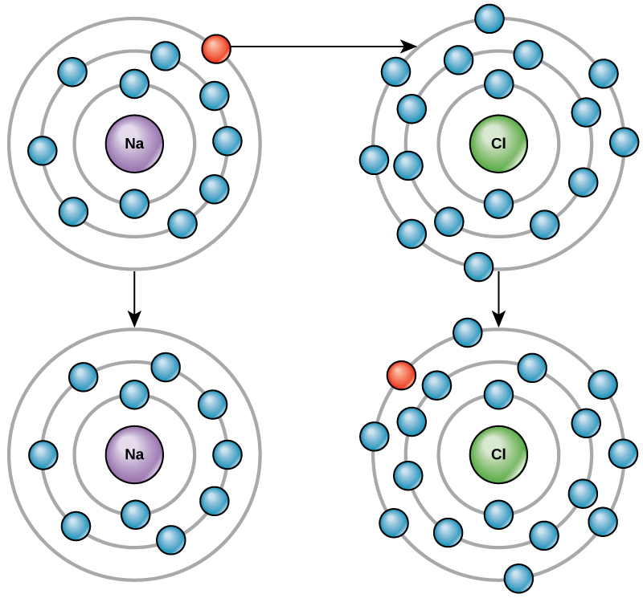
There are four types of bonds or interactions: ionic, covalent, hydrogen bonds, and van der Waals interactions. Ionic and covalent bonds are strong interactions that require a larger energy input to break apart. When an element donates an electron from its outer shell, as in the sodium atom example above, a positive ion is formed. The element accepting the electron is now negatively charged. Because positive and negative charges attract, these ions stay together and form an ionic bond, or a bond between ions. The elements bond together with the electron from one element staying predominantly with the other element. When Na⁺ and Cl⁻ ions combine to produce NaCl, an electron from a sodium atom stays with the other seven from the chlorine atom, and the sodium and chloride ions attract each other in a lattice of ions with a net zero charge.
Another type of strong chemical bond between two or more atoms is a covalent bond. These bonds form when an electron is shared between two elements and are the strongest and most common form of chemical bond in living organisms. Covalent bonds form between the elements that make up the biological molecules in our cells. Unlike ionic bonds, covalent bonds do not dissociate in water.
The hydrogen and oxygen atoms that combine to form water molecules are bound together by covalent bonds. The electron from the hydrogen atom divides its time between the outer shell of the hydrogen atom and the incomplete outer shell of the oxygen atom. To completely fill the outer shell of an oxygen atom, two electrons from two hydrogen atoms are needed, hence the subscript "2" in H₂O. The electrons are shared between the atoms, dividing their time between them to "fill" the outer shell of each. This sharing is a lower energy state for all of the atoms involved than if they existed without their outer shells filled.
There are two types of covalent bonds: polar and nonpolar. Nonpolar covalent bonds form between two atoms of the same element or between different elements that share the electrons equally. For example, an oxygen atom can bond with another oxygen atom to fill their outer shells. This association is nonpolar because the electrons will be equally distributed between each oxygen atom. Two covalent bonds form between the two oxygen atoms because oxygen requires two shared electrons to fill its outermost shell. Nitrogen atoms will form three covalent bonds (also called triple covalent) between two atoms of nitrogen because each nitrogen atom needs three electrons to fill its outermost shell. Another example of a nonpolar covalent bond is found in the methane (CH₄) molecule. The carbon atom has four electrons in its outermost shell and needs four more to fill it. It gets these four from four hydrogen atoms, each atom providing one. These elements all share the electrons equally, creating four nonpolar covalent bonds (Figure 2.6).
In a polar covalent bond, the electrons shared by the atoms spend more time closer to one nucleus than to the other nucleus. Because of the unequal distribution of electrons between the different nuclei, a slightly positive (δ+) or slightly negative (δ–) charge develops. The covalent bonds between hydrogen and oxygen atoms in water are polar covalent bonds. The shared electrons spend more time near the oxygen nucleus, giving it a small negative charge, than they spend near the hydrogen nuclei, giving these molecules a small positive charge.
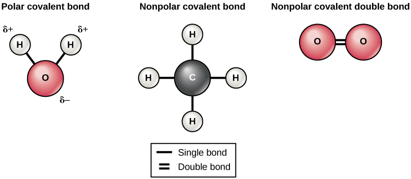
Ionic and covalent bonds are strong bonds that require considerable energy to break. However, not all bonds between elements are ionic or covalent bonds. Weaker bonds can also form. These are attractions that occur between positive and negative charges that do not require much energy to break. Two weak bonds that occur frequently are hydrogen bonds and van der Waals interactions. These bonds give rise to the unique properties of water and the unique structures of DNA and proteins.
When polar covalent bonds containing a hydrogen atom form, the hydrogen atom in that bond has a slightly positive charge. This is because the shared electron is pulled more strongly toward the other element and away from the hydrogen nucleus. Because the hydrogen atom is slightly positive (δ+), it will be attracted to neighboring negative partial charges (δ–). When this happens, a weak interaction occurs between the δ+ charge of the hydrogen atom of one molecule and the δ– charge of the other molecule. This interaction is called a hydrogen bond. This type of bond is common; for example, the liquid nature of water is caused by the hydrogen bonds between water molecules (Figure 2.7). Hydrogen bonds give water the unique properties that sustain life. If it were not for hydrogen bonding, water would be a gas rather than a liquid at room temperature.
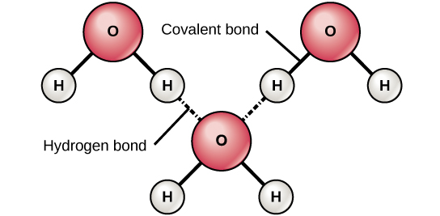
Hydrogen bonds can form between different molecules and they do not always have to include a water molecule. Hydrogen atoms in polar bonds within any molecule can form bonds with other adjacent molecules. For example, hydrogen bonds hold together two long strands of DNA to give the DNA molecule its characteristic double-stranded structure. Hydrogen bonds are also responsible for some of the three-dimensional structure of proteins.
Like hydrogen bonds, van der Waals interactions are weak attractions or interactions between molecules. They occur between polar, covalently bound, atoms in different molecules. Some of these weak attractions are caused by temporary partial charges formed when electrons move around a nucleus. These weak interactions between molecules are important in biological systems.
MRI imaging works by subjecting hydrogen nuclei, which are abundant in the water in soft tissues, to fluctuating magnetic fields, which cause them to emit their own magnetic field. This signal is then read by sensors in the machine and interpreted by a computer to form a detailed image.
Some radiography technologists and technicians specialize in computed tomography, MRI, and mammography. They produce films or images of the body that help medical professionals examine and diagnose. Radiologists work directly with patients, explaining machinery, preparing them for exams, and ensuring that their body or body parts are positioned correctly to produce the needed images. Physicians or radiologists then analyze the test results.
Radiography technicians can work in hospitals, doctors' offices, or specialized imaging centers. Training to become a radiography technician happens at hospitals, colleges, and universities that offer certificates, associate's degrees, or bachelor's degrees in radiography.
Complete the written checkpoint above to unlock the quiz.
- Describe the properties of water that are critical to maintaining life
Do you ever wonder why scientists spend time looking for water on other planets? It is because water is essential to life; even minute traces of it on another planet can indicate that life could or did exist on that planet. Water is one of the more abundant molecules in living cells and the one most critical to life as we know it. Approximately 60–70 percent of your body is made up of water. Without it, life simply would not exist.
The hydrogen and oxygen atoms within water molecules form polar covalent bonds. The shared electrons spend more time associated with the oxygen atom than they do with hydrogen atoms. There is no overall charge to a water molecule, but there is a slight positive charge on each hydrogen atom and a slight negative charge on the oxygen atom. Because of these charges, the slightly positive hydrogen atoms repel each other and form the unique shape seen in Figure 2.7. Each water molecule attracts other water molecules because of the positive and negative charges in the different parts of the molecule. Water also attracts other polar molecules (such as sugars), forming hydrogen bonds. When a substance readily forms hydrogen bonds with water, it can dissolve in water and is referred to as hydrophilic ("water-loving"). Hydrogen bonds are not readily formed with nonpolar substances like oils and fats (Figure 2.8). These nonpolar compounds are hydrophobic ("water-fearing") and will not dissolve in water.
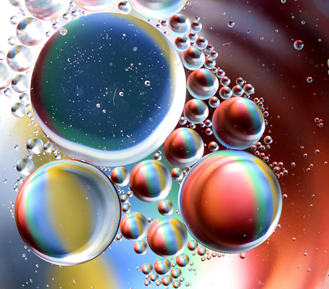
The hydrogen bonds in water allow it to absorb and release heat energy more slowly than many other substances. Temperature is a measure of the motion (kinetic energy) of molecules. As the motion increases, energy is higher and thus temperature is higher. Water absorbs a great deal of energy before its temperature rises. Increased energy disrupts the hydrogen bonds between water molecules. Because these bonds can be created and disrupted rapidly, water absorbs an increase in energy and temperature changes only minimally. This means that water moderates temperature changes within organisms and in their environments. As energy input continues, the balance between hydrogen-bond formation and destruction swings toward the destruction side. More bonds are broken than are formed. This process results in the release of individual water molecules at the surface of the liquid (such as a body of water, the leaves of a plant, or the skin of an organism) in a process called evaporation. Evaporation of sweat, which is 90 percent water, allows for cooling of an organism, because breaking hydrogen bonds requires an input of energy and takes heat away from the body.
Conversely, as molecular motion decreases and temperatures drop, less energy is present to break the hydrogen bonds between water molecules. These bonds remain intact and begin to form a rigid, lattice-like structure (e.g., ice) (Figure 2.9a). When frozen, ice is less dense than liquid water (the molecules are farther apart). This means that ice floats on the surface of a body of water (Figure 2.9b). In lakes, ponds, and oceans, ice will form on the surface of the water, creating an insulating barrier to protect the animal and plant life beneath from freezing in the water. If this did not happen, plants and animals living in water would freeze in a block of ice and could not move freely, making life in cold temperatures difficult or impossible.
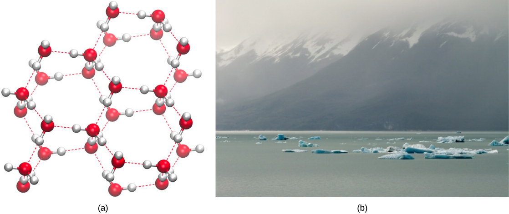
Because water is polar, with slight positive and negative charges, ionic compounds and polar molecules can readily dissolve in it. Water is, therefore, what is referred to as a solvent — a substance capable of dissolving another substance. The charged particles will form hydrogen bonds with a surrounding layer of water molecules. This is referred to as a sphere of hydration and serves to keep the particles separated or dispersed in the water. In the case of table salt (NaCl) mixed in water (Figure 2.10), the sodium and chloride ions separate, or dissociate, in the water, and spheres of hydration are formed around the ions. A positively charged sodium ion is surrounded by the partially negative charges of oxygen atoms in water molecules. A negatively charged chloride ion is surrounded by the partially positive charges of hydrogen atoms in water molecules. These spheres of hydration are also referred to as hydration shells. The polarity of the water molecule makes it an effective solvent and is important in its many roles in living systems.
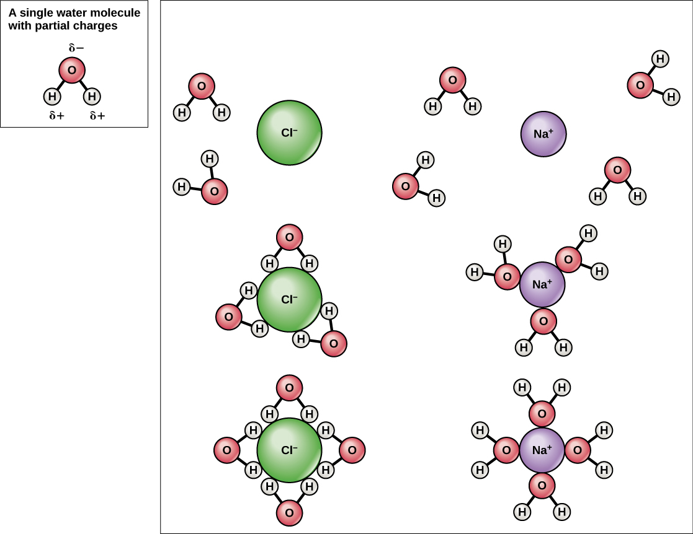
Have you ever filled up a glass of water to the very top and then slowly added a few more drops? Before it overflows, the water actually forms a dome-like shape above the rim of the glass. This water can stay above the glass because of the property of cohesion. In cohesion, water molecules are attracted to each other (because of hydrogen bonding), keeping the molecules together at the liquid-air (gas) interface, although there is no more room in the glass. Cohesion gives rise to surface tension, the capacity of a substance to withstand rupture when placed under tension or stress. When you drop a small scrap of paper onto a droplet of water, the paper floats on top of the water droplet, although the object is denser (heavier) than the water. This occurs because of the surface tension that is created by the water molecules. Cohesion and surface tension keep the water molecules intact and the item floating on the top. It is even possible to "float" a steel needle on top of a glass of water if you place it gently, without breaking the surface tension (Figure 2.11).
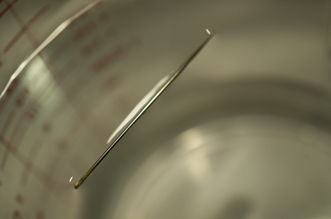
These cohesive forces are also related to the water's property of adhesion, or the attraction between water molecules and other molecules. This is observed when water "climbs" up a straw placed in a glass of water. You will notice that the water appears to be higher on the sides of the straw than in the middle. This is because the water molecules are attracted to the straw and therefore adhere to it.
Cohesive and adhesive forces are important for sustaining life. For example, because of these forces, water can flow up from the roots to the tops of plants to feed the plant.
The pH of a solution is a measure of its acidity or basicity. You have probably used litmus paper, paper that has been treated with a natural water-soluble dye so it can be used as a pH indicator, to test how much acid or base (basicity) exists in a solution. You might have even used some to make sure the water in an outdoor swimming pool is properly treated. In both cases, this pH test measures the amount of hydrogen ions that exists in a given solution. High concentrations of hydrogen ions yield a low pH, whereas low levels of hydrogen ions result in a high pH. The overall concentration of hydrogen ions is inversely related to its pH and can be measured on the pH scale (Figure 2.12). Therefore, the more hydrogen ions present, the lower the pH; conversely, the fewer hydrogen ions, the higher the pH.
The pH scale ranges from 0 to 14. A change of one unit on the pH scale represents a change in the concentration of hydrogen ions by a factor of 10, a change in two units represents a change in the concentration of hydrogen ions by a factor of 100. Thus, small changes in pH represent large changes in the concentrations of hydrogen ions. Pure water is neutral. It is neither acidic nor basic, and has a pH of 7.0. Anything below 7.0 (ranging from 0.0 to 6.9) is acidic, and anything above 7.0 (from 7.1 to 14.0) is alkaline. The blood in your veins is slightly alkaline (pH = 7.4). The environment in your stomach is highly acidic (pH = 1 to 2). Orange juice is mildly acidic (pH = approximately 3.5), whereas baking soda is basic (pH = 9.0).
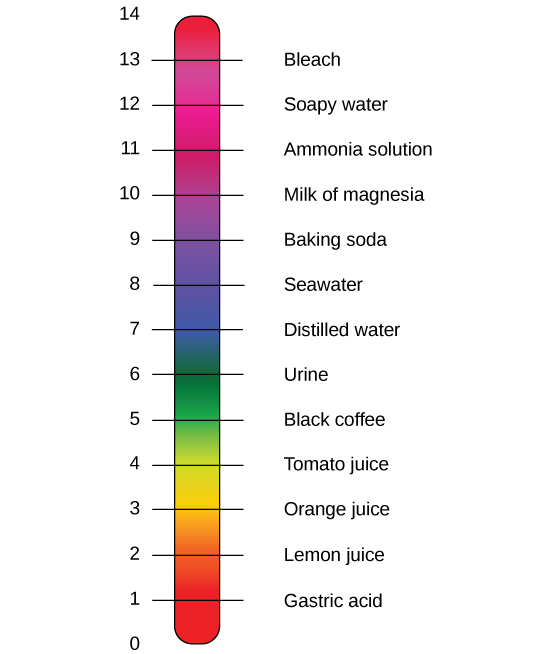
Acids are substances that provide hydrogen ions (H⁺) and lower pH, whereas bases provide hydroxide ions (OH⁻) and raise pH. The stronger the acid, the more readily it donates H⁺. For example, hydrochloric acid and lemon juice are very acidic and readily give up H⁺ when added to water. Conversely, bases are those substances that readily donate OH⁻. The OH⁻ ions combine with H⁺ to produce water, which raises a substance's pH. Sodium hydroxide and many household cleaners are very alkaline and give up OH⁻ rapidly when placed in water, thereby raising the pH.
Most cells in our bodies operate within a very narrow window of the pH scale, typically ranging only from 7.2 to 7.6. If the pH of the body is outside of this range, the respiratory system malfunctions, as do other organs in the body. Cells no longer function properly, and proteins will break down. Deviation outside of the pH range can induce coma or even cause death.
So how is it that we can ingest or inhale acidic or basic substances and not die? Buffers are the key. Buffers readily absorb excess H⁺ or OH⁻, keeping the pH of the body carefully maintained in the aforementioned narrow range. Carbon dioxide is part of a prominent buffer system in the human body; it keeps the pH within the proper range. This buffer system involves carbonic acid (H₂CO₃) and bicarbonate (HCO₃⁻) anion. If too much H⁺ enters the body, bicarbonate will combine with the H⁺ to create carbonic acid and limit the decrease in pH. Likewise, if too much OH⁻ is introduced into the system, carbonic acid will rapidly dissociate into bicarbonate and H⁺ ions. The H⁺ ions can combine with the OH⁻ ions, limiting the increase in pH. While carbonic acid is an important product in this reaction, its presence is fleeting because the carbonic acid is released from the body as carbon dioxide gas each time we breathe. Without this buffer system, the pH in our bodies would fluctuate too much and we would fail to survive.

Complete the written checkpoint above to unlock the quiz.
- Describe the ways in which carbon is critical to life
- Explain why carbon can form such diverse molecular structures
- Name the four major classes of biological macromolecules
- Explain dehydration synthesis and hydrolysis
The large molecules necessary for life that are built from smaller organic molecules are called biological macromolecules. There are four major classes of biological macromolecules (carbohydrates, lipids, proteins, and nucleic acids), and each is an important component of the cell and performs a wide array of functions. Combined, these molecules make up the majority of a cell's dry mass. Biological macromolecules are organic, meaning they contain carbon and are bound to hydrogen, and may contain oxygen, nitrogen, and additional minor elements.
It is often said that life is "carbon-based." This means that carbon atoms, bonded to other carbon atoms or other elements, form the fundamental components of many, if not most, of the molecules found uniquely in living things. Other elements play important roles in biological molecules, but carbon certainly qualifies as the "foundation" element for molecules in living things. It is the bonding properties of carbon atoms that are responsible for its important role.
Carbon contains four electrons in its outer shell. Therefore, it can form four covalent bonds with other atoms or molecules. The simplest organic carbon molecule is methane (CH₄), in which four hydrogen atoms bind to a carbon atom (Figure 2.13).
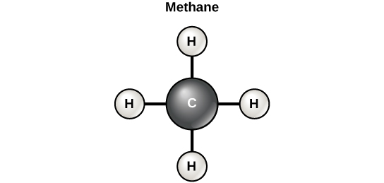
However, structures that are more complex are made using carbon. Any of the hydrogen atoms can be replaced with another carbon atom covalently bonded to the first carbon atom. In this way, long and branching chains of carbon compounds can be made (Figure 2.14a). The carbon atoms may bond with atoms of other elements, such as nitrogen, oxygen, and phosphorus (Figure 2.14b). The molecules may also form rings, which themselves can link with other rings (Figure 2.14c). This diversity of molecular forms accounts for the diversity of functions of the biological macromolecules and is based to a large degree on the ability of carbon to form multiple bonds with itself and other atoms.
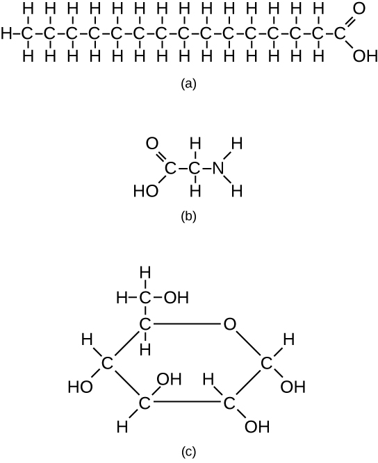
Most macromolecules are made from single subunits, or building blocks, called monomers. The monomers combine with each other using covalent bonds to form larger molecules known as polymers. In doing so, monomers release water molecules as byproducts. This type of reaction is known as dehydration synthesis (or condensation reaction), which means "to put together while losing water."
In a dehydration synthesis reaction, the hydrogen of one monomer combines with the hydroxyl group of another monomer, releasing a molecule of water. At the same time, the monomers share electrons and form covalent bonds.
The reverse process — breaking polymers back into monomers — is called hydrolysis ("to split water"). During hydrolysis, a water molecule is used to break the covalent bond. One part of the water molecule (H) attaches to one monomer, and the other part (OH) attaches to the other monomer.
Hydrolysis: polymer + H₂O → monomers (breaking down).
These two reactions are the fundamental processes by which all biological macromolecules are assembled and disassembled.
Complete the written checkpoint above to unlock the quiz.
- Describe the four major types of biological molecules
- Distinguish monosaccharides, disaccharides, and polysaccharides
- Compare the functions of starch, glycogen, cellulose, and chitin
- Describe the structure and function of triglycerides, phospholipids, and steroids
- Distinguish saturated from unsaturated fatty acids and explain trans fats
Carbohydrates are macromolecules with which most consumers are somewhat familiar. To lose weight, some individuals adhere to "low-carb" diets. Athletes, in contrast, often "carb-load" before important competitions to ensure that they have sufficient energy to compete at a high level. Carbohydrates are, in fact, an essential part of our diet; grains, fruits, and vegetables are all natural sources of carbohydrates. Carbohydrates provide energy to the body, particularly through glucose, a simple sugar. Carbohydrates also have other important functions in humans, animals, and plants.
Carbohydrates can be represented by the formula (CH₂O)n, where n is the number of carbon atoms in the molecule. In other words, the ratio of carbon to hydrogen to oxygen is 1:2:1 in carbohydrate molecules. Carbohydrates are classified into three subtypes: monosaccharides, disaccharides, and polysaccharides.
Monosaccharides (mono- = "one"; sacchar- = "sweet") are simple sugars, the most common of which is glucose. In monosaccharides, the number of carbon atoms usually ranges from three to six. Most monosaccharide names end with the suffix -ose. Depending on the number of carbon atoms in the sugar, they may be known as trioses (three carbon atoms), pentoses (five carbon atoms), and hexoses (six carbon atoms).
Monosaccharides may exist as a linear chain or as ring-shaped molecules; in aqueous solutions, they are usually found in the ring form.
The chemical formula for glucose is C₆H₁₂O₆. In most living species, glucose is an important source of energy. During cellular respiration, energy is released from glucose, and that energy is used to help make adenosine triphosphate (ATP). Plants synthesize glucose using carbon dioxide and water by the process of photosynthesis, and the glucose, in turn, is used for the energy requirements of the plant. The excess synthesized glucose is often stored as starch that is broken down by other organisms that feed on plants.
Galactose (part of lactose, or milk sugar) and fructose (found in fruit) are other common monosaccharides. Although glucose, galactose, and fructose all have the same chemical formula (C₆H₁₂O₆), they differ structurally and chemically (and are known as isomers) because of differing arrangements of atoms in the carbon chain (Figure 2.15).
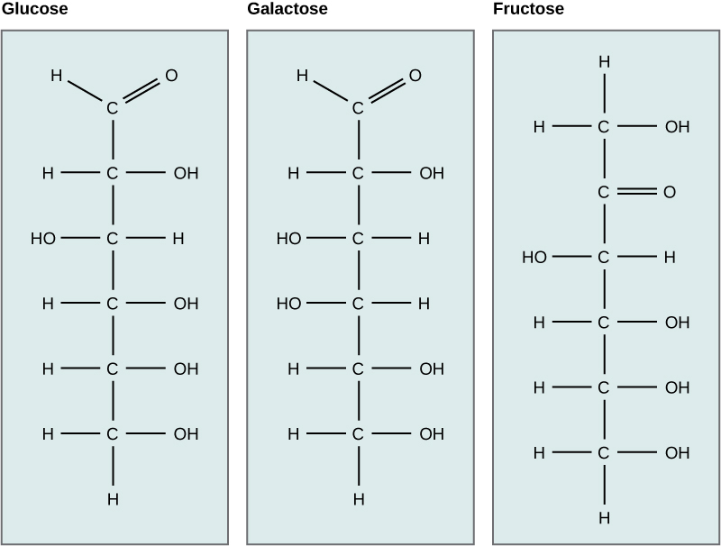
Disaccharides (di- = "two") form when two monosaccharides undergo a dehydration reaction (a reaction in which the removal of a water molecule occurs). During this process, the hydroxyl group (–OH) of one monosaccharide combines with a hydrogen atom of another monosaccharide, releasing a molecule of water (H₂O) and forming a covalent bond between atoms in the two sugar molecules.
Common disaccharides include lactose, maltose, and sucrose. Lactose is a disaccharide consisting of the monomers glucose and galactose. It is found naturally in milk. Maltose, or malt sugar, is a disaccharide formed from a dehydration reaction between two glucose molecules. The most common disaccharide is sucrose, or table sugar, which is composed of the monomers glucose and fructose.
A long chain of monosaccharides linked by covalent bonds is known as a polysaccharide (poly- = "many"). The chain may be branched or unbranched, and it may contain different types of monosaccharides. Polysaccharides may be very large molecules. Starch, glycogen, cellulose, and chitin are examples of polysaccharides.
Starch is the stored form of sugars in plants and is made up of amylose and amylopectin (both polymers of glucose). Plants are able to synthesize glucose, and the excess glucose is stored as starch in different plant parts, including roots and seeds. The starch that is consumed by animals is broken down into smaller molecules, such as glucose. The cells can then absorb the glucose.
Glycogen is the storage form of glucose in humans and other vertebrates, and is made up of monomers of glucose. Glycogen is the animal equivalent of starch and is a highly branched molecule usually stored in liver and muscle cells. Whenever glucose levels decrease, glycogen is broken down to release glucose.
Cellulose is one of the most abundant natural biopolymers. The cell walls of plants are mostly made of cellulose, which provides structural support to the cell. Wood and paper are mostly cellulosic in nature. Cellulose is made up of glucose monomers that are linked by bonds between particular carbon atoms in the glucose molecule.
Every other glucose monomer in cellulose is flipped over and packed tightly as extended long chains. This gives cellulose its rigidity and high tensile strength — which is so important to plant cells. Cellulose passing through our digestive system is called dietary fiber. While the glucose-glucose bonds in cellulose cannot be broken down by human digestive enzymes, herbivores such as cows, buffalos, and horses are able to digest grass that is rich in cellulose and use it as a food source. In these animals, certain species of bacteria reside in the digestive system of herbivores and secrete the enzyme cellulase. The appendix also contains bacteria that break down cellulose, giving it an important role in the digestive systems of some ruminants. Cellulases can break down cellulose into glucose monomers that can be used as an energy source by the animal.
Carbohydrates serve other functions in different animals. Arthropods, such as insects, spiders, and crabs, have an outer skeleton, called the exoskeleton, which protects their internal body parts. This exoskeleton is made of the biological macromolecule chitin, which is a nitrogenous carbohydrate. It is made of repeating units of a modified sugar containing nitrogen.
Thus, through differences in molecular structure, carbohydrates are able to serve the very different functions of energy storage (starch and glycogen) and structural support and protection (cellulose and chitin) (Figure 2.16).
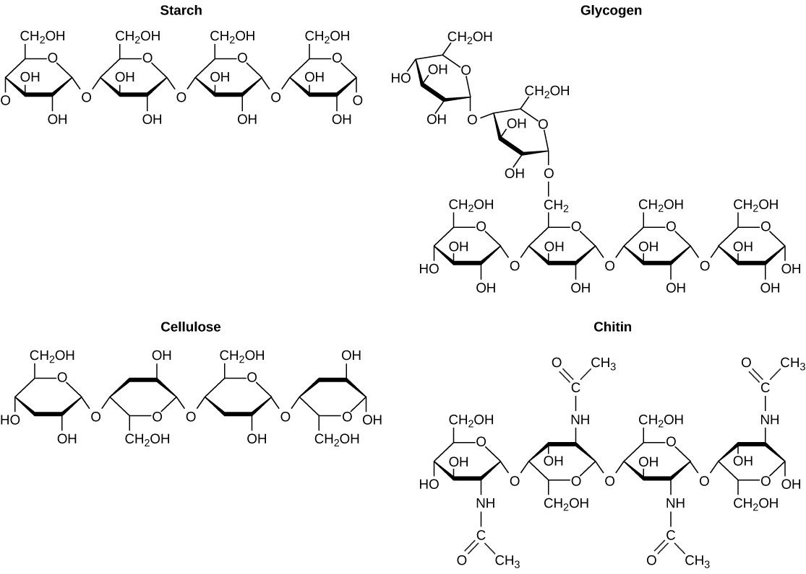
To become a registered dietitian, one needs to earn at least a bachelor's degree in dietetics, nutrition, food technology, or a related field. In addition, registered dietitians must complete a supervised internship program and pass a national exam. Those who pursue careers in dietetics take courses in nutrition, chemistry, biochemistry, biology, microbiology, and human physiology. Dietitians must become experts in the chemistry and functions of food (proteins, carbohydrates, and fats).
Lipids include a diverse group of compounds that are united by a common feature. Lipids are hydrophobic ("water-fearing"), or insoluble in water, because they are nonpolar molecules. This is because they are hydrocarbons that include only nonpolar carbon-carbon or carbon-hydrogen bonds. Lipids perform many different functions in a cell. Cells store energy for long-term use in the form of lipids called fats. Lipids also provide insulation from the environment for plants and animals (Figure 2.17). For example, they help keep aquatic birds and mammals dry because of their water-repelling nature. Lipids are also the building blocks of many hormones and are an important constituent of the plasma membrane. Lipids include fats, oils, waxes, phospholipids, and steroids.
A fat molecule, such as a triglyceride, consists of two main components — glycerol and fatty acids. Glycerol is an organic compound with three carbon atoms, five hydrogen atoms, and three hydroxyl (–OH) groups. Fatty acids have a long chain of hydrocarbons to which an acidic carboxyl group is attached, hence the name "fatty acid." The number of carbons in the fatty acid may range from 4 to 36; most common are those containing 12–18 carbons. In a fat molecule, a fatty acid is attached to each of the three oxygen atoms in the –OH groups of the glycerol molecule with a covalent bond (Figure 2.18).
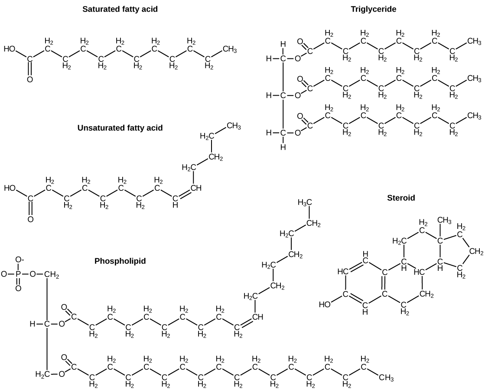
During this covalent bond formation, three water molecules are released. The three fatty acids in the fat may be similar or dissimilar. These fats are also called triglycerides because they have three fatty acids. Some fatty acids have common names that specify their origin. For example, palmitic acid, a saturated fatty acid, is derived from the palm tree. Arachidic acid is derived from Arachis hypogaea, the scientific name for peanuts.
Fatty acids may be saturated or unsaturated. In a fatty acid chain, if there are only single bonds between neighboring carbons in the hydrocarbon chain, the fatty acid is saturated. Saturated fatty acids are saturated with hydrogen; in other words, the number of hydrogen atoms attached to the carbon skeleton is maximized.
When the hydrocarbon chain contains a double bond, the fatty acid is an unsaturated fatty acid.
Most unsaturated fats are liquid at room temperature and are called oils. If there is one double bond in the molecule, then it is known as a monounsaturated fat (e.g., olive oil), and if there is more than one double bond, then it is known as a polyunsaturated fat (e.g., canola oil).
Saturated fats tend to get packed tightly and are solid at room temperature. Animal fats with stearic acid and palmitic acid contained in meat, and the fat with butyric acid contained in butter, are examples of saturated fats. Mammals store fats in specialized cells called adipocytes, where globules of fat occupy most of the cell. In plants, fat or oil is stored in seeds and is used as a source of energy during embryonic development.
Unsaturated fats or oils are usually of plant origin and contain unsaturated fatty acids. The double bond causes a bend or a "kink" that prevents the fatty acids from packing tightly, keeping them liquid at room temperature. Olive oil, corn oil, canola oil, and cod liver oil are examples of unsaturated fats. Unsaturated fats help to improve blood cholesterol levels, whereas saturated fats might contribute to plaque formation in the arteries, which increases the risk of a heart attack.
In the food industry, oils are artificially hydrogenated to make them semi-solid, leading to less spoilage and increased shelf life. Simply speaking, hydrogen gas is bubbled through oils to solidify them. During this hydrogenation process, double bonds of the cis-conformation in the hydrocarbon chain may be converted to double bonds in the trans-conformation. This forms a trans-fat from a cis-fat. The orientation of the double bonds affects the chemical properties of the fat (Figure 2.19).
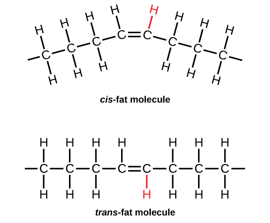
Margarine, some types of peanut butter, and shortening are examples of artificially hydrogenated trans-fats. Recent studies have shown that an increase in trans-fats in the human diet may lead to an increase in levels of low-density lipoprotein (LDL), or "bad" cholesterol, which, in turn, may lead to plaque deposition in the arteries, resulting in heart disease. Many fast food restaurants have recently eliminated the use of trans-fats, and U.S. food labels are now required to list their trans-fat content.
Essential fatty acids are fatty acids that are required but not synthesized by the human body. Consequently, they must be supplemented through the diet. Omega-3 fatty acids fall into this category and are one of only two known essential fatty acids for humans (the other being omega-6 fatty acids). They are a type of polyunsaturated fat and are called omega-3 fatty acids because the third carbon from the end of the fatty acid participates in a double bond. Salmon, trout, and tuna are good sources of omega-3 fatty acids. Omega-3 fatty acids are important in brain function and normal growth and development. They may also prevent heart disease and reduce the risk of cancer.
Like carbohydrates, fats have received a lot of bad publicity. It is true that eating an excess of fried foods and other "fatty" foods leads to weight gain. However, fats do have important functions. Fats serve as long-term energy storage. They also provide insulation for the body. Therefore, "healthy" unsaturated fats in moderate amounts should be consumed on a regular basis.
Phospholipids are the major constituent of the plasma membrane. Like fats, they are composed of fatty acid chains attached to a glycerol or similar backbone. Instead of three fatty acids attached, however, there are two fatty acids and the third carbon of the glycerol backbone is bound to a phosphate group. The phosphate group is modified by the addition of an alcohol.
A phospholipid has both hydrophobic and hydrophilic regions. The fatty acid chains are hydrophobic and exclude themselves from water, whereas the phosphate is hydrophilic and interacts with water.
Cells are surrounded by a membrane, which has a bilayer of phospholipids. The fatty acids of phospholipids face inside, away from water, whereas the phosphate group can face either the outside environment or the inside of the cell, which are both aqueous.
Unlike the phospholipids and fats discussed earlier, steroids have a ring structure. Although they do not resemble other lipids, they are grouped with them because they are also hydrophobic. All steroids have four, linked carbon rings and several of them, like cholesterol, have a short tail.
Cholesterol is a steroid. Cholesterol is mainly synthesized in the liver and is the precursor of many steroid hormones, such as testosterone and estradiol. It is also the precursor of vitamins E and K. Cholesterol is the precursor of bile salts, which help in the breakdown of fats and their subsequent absorption by cells. Although cholesterol is often spoken of in negative terms, it is necessary for the proper functioning of the body. It is a key component of the plasma membranes of animal cells.
Waxes are made up of a hydrocarbon chain with an alcohol (–OH) group and a fatty acid. Examples of animal waxes include beeswax and lanolin. Plants also have waxes, such as the coating on their leaves, that helps prevent them from drying out.
Complete the written checkpoint above to unlock the quiz.
- Explain the impact of slight changes in amino acids on organisms
- Describe the structure of amino acids and peptide bonds
- Explain the four levels of protein structure
- Describe the functions of proteins including enzymes and hormones
- Explain protein denaturation
- Describe the structure and function of nucleic acids (DNA and RNA)
Proteins are one of the most abundant organic molecules in living systems and have the most diverse range of functions of all macromolecules. Proteins may be structural, regulatory, contractile, or protective; they may serve in transport, storage, or membranes; or they may be toxins or enzymes. Each cell in a living system may contain thousands of different proteins, each with a unique function. Their structures, like their functions, vary greatly. They are all, however, polymers of amino acids, arranged in a linear sequence.
The functions of proteins are very diverse because there are 20 different chemically distinct amino acids that form long chains, and the amino acids can be in any order. For example, proteins can function as enzymes or hormones. Enzymes, which are produced by living cells, are catalysts in biochemical reactions (like digestion) and are usually proteins. Each enzyme is specific for the substrate (a reactant that binds to an enzyme) upon which it acts. Enzymes can function to break molecular bonds, to rearrange bonds, or to form new bonds. An example of an enzyme is salivary amylase, which breaks down amylose, a component of starch.
Hormones are chemical signaling molecules, usually proteins or steroids, secreted by an endocrine gland or group of endocrine cells that act to control or regulate specific physiological processes, including growth, development, metabolism, and reproduction. For example, insulin is a protein hormone that maintains blood glucose levels.
Proteins have different shapes and molecular weights; some proteins are globular in shape whereas others are fibrous in nature. For example, hemoglobin is a globular protein, but collagen, found in our skin, is a fibrous protein. Protein shape is critical to its function. Changes in temperature, pH, and exposure to chemicals may lead to permanent changes in the shape of the protein, leading to a loss of function or denaturation (to be discussed in more detail later). All proteins are made up of different arrangements of the same 20 kinds of amino acids.
Amino acids are the monomers that make up proteins. Each amino acid has the same fundamental structure, which consists of a central carbon atom bonded to an amino group (–NH₂), a carboxyl group (–COOH), and a hydrogen atom. Every amino acid also has another variable atom or group of atoms bonded to the central carbon atom known as the R group. The R group is the only difference in structure between the 20 amino acids; otherwise, the amino acids are identical (Figure 2.20).
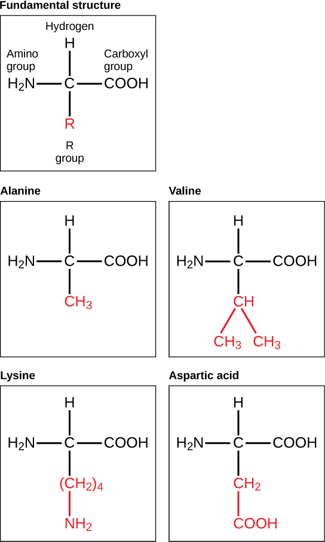
The chemical nature of the R group determines the chemical nature of the amino acid within its protein (that is, whether it is acidic, basic, polar, or nonpolar).
The sequence and number of amino acids ultimately determine a protein's shape, size, and function. Each amino acid is attached to another amino acid by a covalent bond, known as a peptide bond, which is formed by a dehydration reaction. The carboxyl group of one amino acid and the amino group of a second amino acid combine, releasing a water molecule. The resulting bond is the peptide bond.
The products formed by such a linkage are called polypeptides. While the terms polypeptide and protein are sometimes used interchangeably, a polypeptide is technically a polymer of amino acids, whereas the term protein is used for a polypeptide or polypeptides that have combined together, have a distinct shape, and have a unique function.
For example, scientists have determined that human cytochrome c contains 104 amino acids. For each cytochrome c molecule that has been sequenced to date from different organisms, 37 of these amino acids appear in the same position in each cytochrome c. This indicates that all of these organisms are descended from a common ancestor.
On comparing the human and chimpanzee protein sequences, no sequence difference was found. When human and rhesus monkey sequences were compared, a single difference was found in one amino acid. In contrast, human-to-yeast comparisons show a difference in 44 amino acids, suggesting that humans and chimpanzees have a more recent common ancestor than humans and the rhesus monkey, or humans and yeast.
As discussed earlier, the shape of a protein is critical to its function. To understand how the protein gets its final shape or conformation, we need to understand the four levels of protein structure: primary, secondary, tertiary, and quaternary (Figure 2.21).
The unique sequence and number of amino acids in a polypeptide chain is its primary structure. The unique sequence for every protein is ultimately determined by the gene that encodes the protein. Any change in the gene sequence may lead to a different amino acid being added to the polypeptide chain, causing a change in protein structure and function. William Warrick Cardozo showed that sickle-cell anemia is caused by a change in protein structure as a result of gene encoding, meaning that it is an inherited disorder. In sickle cell anemia, the hemoglobin β chain has a single amino acid substitution, causing a change in both the structure and function of the protein. What is most remarkable to consider is that a hemoglobin molecule is made up of two alpha chains and two beta chains that each consist of about 150 amino acids. The molecule, therefore, has about 600 amino acids. The structural difference between a normal hemoglobin molecule and a sickle cell molecule — that dramatically decreases life expectancy in the affected individuals — is a single amino acid of the 600.
Because of this change of one amino acid in the chain, the normally biconcave, or disc-shaped, red blood cells assume a crescent or "sickle" shape, which clogs arteries. This can lead to a myriad of serious health problems, such as breathlessness, dizziness, headaches, and abdominal pain for those who have this disease.
Folding patterns resulting from interactions between the non-R group portions of amino acids give rise to the secondary structure of the protein. The most common are the alpha (α)-helix and beta (β)-pleated sheet structures. Both structures are held in shape by hydrogen bonds. In the alpha helix, the bonds form between every fourth amino acid and cause a twist in the amino acid chain.
In the β-pleated sheet, the "pleats" are formed by hydrogen bonding between atoms on the backbone of the polypeptide chain. The R groups are attached to the carbons, and extend above and below the folds of the pleat. The pleated segments align parallel to each other, and hydrogen bonds form between the same pairs of atoms on each of the aligned amino acids. The α-helix and β-pleated sheet structures are found in many globular and fibrous proteins.
The unique three-dimensional structure of a polypeptide is known as its tertiary structure. This structure is caused by chemical interactions between various amino acids and regions of the polypeptide. Primarily, the interactions among R groups create the complex three-dimensional tertiary structure of a protein. There may be ionic bonds formed between R groups on different amino acids, or hydrogen bonding beyond that involved in the secondary structure. When protein folding takes place, the hydrophobic R groups of nonpolar amino acids lay in the interior of the protein, whereas the hydrophilic R groups lay on the outside. The former types of interactions are also known as hydrophobic interactions.
In nature, some proteins are formed from several polypeptides, also known as subunits, and the interaction of these subunits forms the quaternary structure. Weak interactions between the subunits help to stabilize the overall structure. For example, hemoglobin is a combination of four polypeptide subunits.
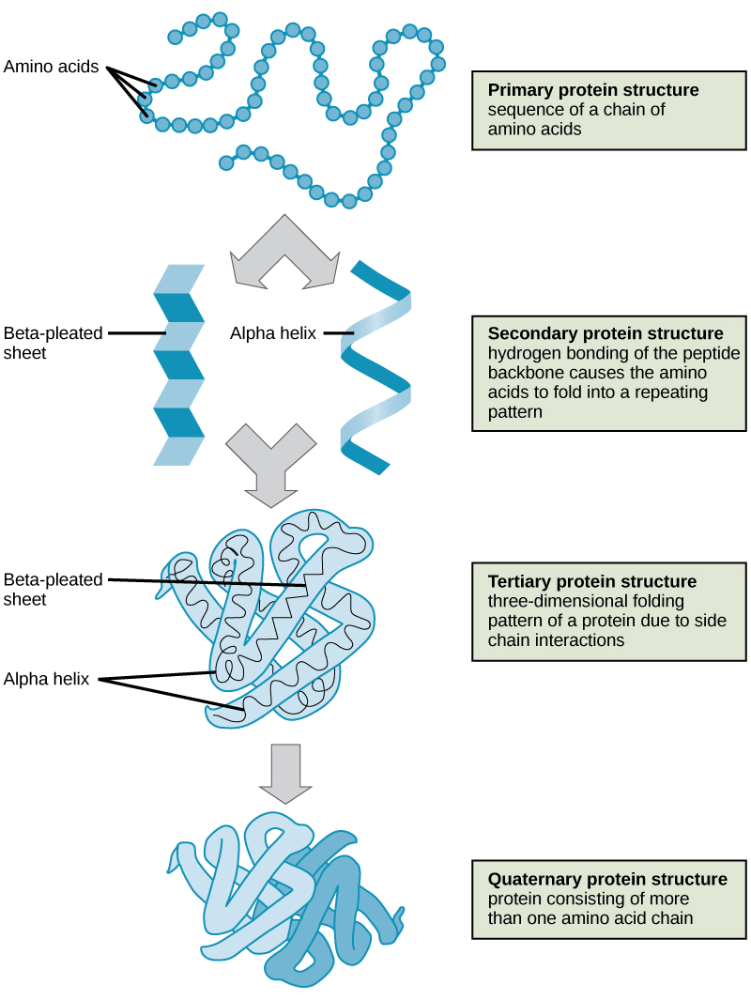
Each protein has its own unique sequence and shape held together by chemical interactions. If the protein is subject to changes in temperature, pH, or exposure to chemicals, the protein structure may change, losing its shape in what is known as denaturation as discussed earlier. Denaturation is often reversible because the primary structure is preserved if the denaturing agent is removed, allowing the protein to resume its function. Sometimes denaturation is irreversible, leading to a loss of function. One example of protein denaturation can be seen when an egg is fried or boiled. The albumin protein in the liquid egg white is denatured when placed in a hot pan, changing from a clear substance to an opaque white substance. Not all proteins are denatured at high temperatures; for instance, bacteria that survive in hot springs have proteins that are adapted to function at those temperatures.
Nucleic acids are key macromolecules in the continuity of life. They carry the genetic blueprint of a cell and carry instructions for the functioning of the cell.
The two main types of nucleic acids are deoxyribonucleic acid (DNA) and ribonucleic acid (RNA). DNA is the genetic material found in all living organisms, ranging from single-celled bacteria to multicellular mammals.
The other type of nucleic acid, RNA, is mostly involved in protein synthesis. The DNA molecules never leave the nucleus, but instead use an RNA intermediary to communicate with the rest of the cell. Other types of RNA are also involved in protein synthesis and its regulation.
DNA and RNA are made up of monomers known as nucleotides. The nucleotides combine with each other to form a polynucleotide, DNA or RNA. Each nucleotide is made up of three components: a nitrogenous base, a pentose (five-carbon) sugar, and a phosphate group (Figure 2.22). Each nitrogenous base in a nucleotide is attached to a sugar molecule, which is attached to a phosphate group.
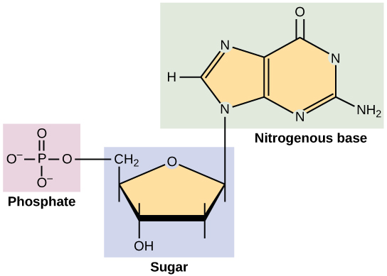
DNA has a double-helical structure (Figure 2.23). It is composed of two strands, or polymers, of nucleotides. The strands are formed with bonds between phosphate and sugar groups of adjacent nucleotides. The strands are bonded to each other at their bases with hydrogen bonds, and the strands coil about each other along their length, hence the "double helix" description, which means a double spiral.
The alternating sugar and phosphate groups lie on the outside of each strand, forming the backbone of the DNA. The nitrogenous bases are stacked in the interior, like the steps of a staircase, and these bases pair; the pairs are bound to each other by hydrogen bonds.
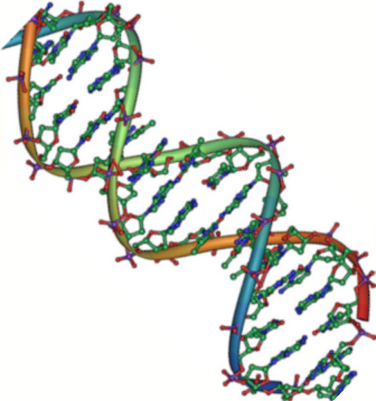
Complete the written checkpoint above to unlock the quiz.
| Lesson | Must-Know Concepts |
|---|---|
| L1 — Atoms | Elements, atoms (protons/neutrons/electrons), atomic number, mass number, isotopes, carbon dating, half-life. |
| L2 — Bonds | Electron shells, octet rule, ions/cations/anions, ionic bonds, covalent bonds (polar/nonpolar), hydrogen bonds, van der Waals. |
| L3 — Water | Polarity, hydrophilic/hydrophobic, cohesion, adhesion, surface tension, solvent, ice density, pH scale, acids, bases, buffers. |
| L4 — Carbon | Carbon forms 4 bonds, 4 macromolecule classes, monomers/polymers, dehydration synthesis, hydrolysis. |
| L5 — Carbs/Lipids | Mono/di/polysaccharides, starch/glycogen/cellulose/chitin, triglycerides, saturated/unsaturated, phospholipids, steroids, trans fats. |
| L6 — Proteins/NA | 20 amino acids, R groups, peptide bonds, 4 levels of structure, denaturation, sickle-cell, enzymes, nucleotides, DNA/RNA. |
Complete the reflection above to unlock the 20-question practice test.